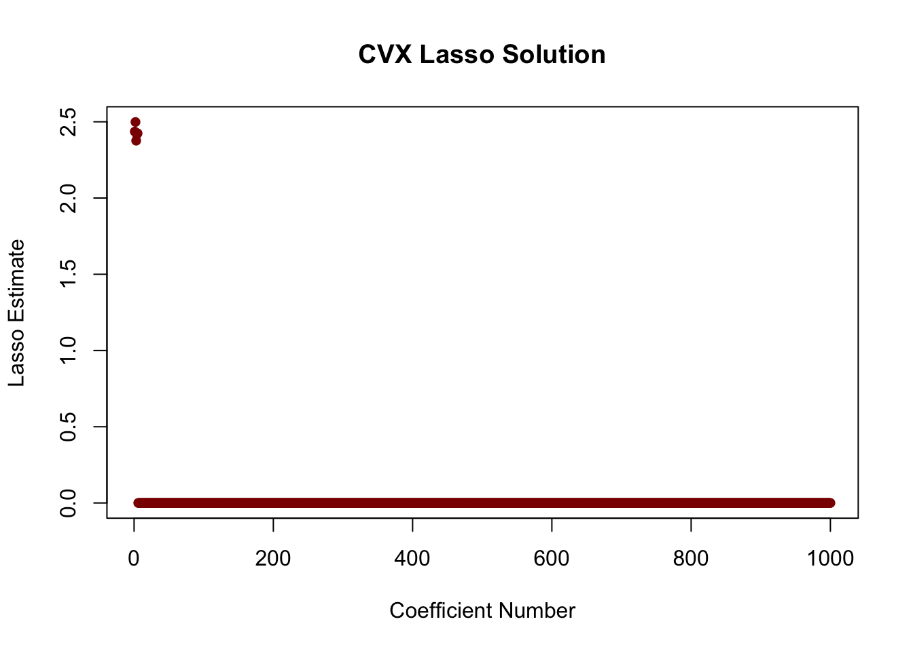

set.seed(100) # For reproducibility
library(CVXR) # Load CVXR
n <- 400 # Set up a moderately high-dimensional problem
p <- 1000
s <- 5
sigma <- 2
# Lasso works best for IID Gaussian data
X <- matrix(rnorm(n * p),
nrow=n, ncol=p)
# 'True' coefficients are mainly sparse with 5 non-zero values
beta_star <- matrix(rep(0, p), ncol=1)
beta_star[1:s] <- 3
# Generate observed response from OLS DGP
y <- X %*% beta_star + rnorm(n, sd=sigma)
## We are now ready to apply CVXR
#### Also see discussion at
#### https://www.cvxpy.org/examples/machine_learning/lasso_regression.html
beta <- Variable(p) # Create 'beta' as a CVX _variable_ to be optimized
# Per theory, about the right level of regularization to be used here
lambda <- sigma * sqrt(s * log(p) / n)
loss <- 1/(2 * n) * sum((y - X %*% beta)^2) # MSE Loss
penalty <- lambda * sum(abs(beta))
objective <- Problem(Minimize(loss + penalty))
beta_hat <- solve(objective)$getValue(beta)STA 9890 Research Report #02: Ensemble Learning Techniques for Fair Classification
Key Dates
- Released to Students: 2025-03-11
- Submission: 2025-04-18 11:45pm ET on Brightspace
Estimated Time to Complete: 9 Hours
Research Report #02: Ensemble Learning Techniques for Fair Classification
In this Research Report, you will explore concepts of Machine Learning Fairness and see how ensemble learning techniques can be used to create a “fair” ensemble from “unfair” base learners.1 Along the way, you will
- Use a black-box optimizer to implement a form of regularized logistic regression
- Design and implement a custom ensemble learning strategy
- Implement and Assess Various ML Fairness Metrics
Project Skeleton
Your report should be divided into three sections, covering the following:
- Background on ML Fairness
- Computation - Implementing Regularized Logistic Regression with
CVXRorcvxpy - Implementation and Assessment of the FairStacks Ensembling Method
At a minimum, these should include the following elements:
- Background on ML Fairness
- Social background, including two examples of bias in automated decision systems
- Overview of definitions used to measure ML Fairness
- Identification and import of a real data set on which we can evaluate the proposed methodology. Be sure to describe both the “raw” data and the fairness metric you are interested in. If there is relevant social context, be sure to describe that as well.
- Computation
- Introduction to the
CVXoptimization framework - Implementation of the following classification methods as base learners to be used in construction of the FairStacks ensemble:
- Naive Bayes (no
CVX) - Linear Discriminant Analysis (no
CVX) - Support Vector Machines (use
CVX) - Logistic Regression (use
CVX): plain, ridge, and lasso variants - Decision trees (you may use an existing implementation - use individual tree(s) here, not a full random forest)
- Naive Bayes (no
- Introduction to the
- Implementation and Assessment of FairStacks
- Define the FairStacks Ensembling Problem, taking care to describe both the choice of loss function (logistic loss)2, regularization and any constraints used
- Implement the FairStacks Problem using
CVX - Implement a full model building (train-validation/ensembling-test split) pipeline to implement FairStacks robustly
- Apply the FairStacks pipeline to your real data set and chosen fairness metric
- Compute the fairness and accuracy obtained by the FairStacks ensemble and compare it with the fairness and accuracy of the individual base learners. Does FairStacks succeed in its goal of improving both accuracy and fairness?
Additional Background
ML Fairness
As ML systems continue to permate our society, increasing interest has been paid to their effects on society. ML systems are highly effective at replicating the characteristics of their training data - both good (accuracy) and bad (bias).3 The book BHN reviews this emerging area in some detail.
For our purposes, we can restrict our attention to ‘fair classification’, i.e., making sure that ML systems treat different groups ‘equally’ (BHN §3). There are many definitions of ‘equally’ that can be appropriate, depending on the problem. In the simplest, demographic parity, the ML system should give the same fraction of positive (+1) labels to all demographic groups; this is the type of fairness embodied by phrases like “looks like America”. We quantify this with measures like deviation from demographic parity. If we divide our population into two groups \(\mathcal{G}_1, \mathcal{G}_2\), the deviation from demographic parity associated with a classifier \(f: \mathbb{R}^p \to \{0, 1\}\) is given by:
\[\text{DDP}(f) = \left|\frac{1}{|\mathcal{G}_1|}\sum_{i \in \mathcal{G}_1} f(\mathbf{x}_i) - \frac{1}{|\mathcal{G}_2|}\sum_{i \in \mathcal{G}_2} f(\mathbf{x}_i)\right| = \left|\mathbb{E}_{\mathbf{x} \sim \mathcal{G}_1} f(\mathbf{x}) - \mathbb{E}_{\mathbf{x} \sim \mathcal{G}_2} f(\mathbf{x}) \right|\]
The 2018 FAccT Tutorial “21 Fairness Definitions and Their Politics” covers this and other fairnesss metrics. For purposes of this project, you should consider the fairness metric that is most appropriate to the social context surrounding your dataset of interest. Note that, if your interest is in a non-US data set, the relevant subgroups and legal doctrines may be significantly different than those (implicitly) assumed by most of the FairML literature.
FairStacks
FairStacks is a novel ensemble learning method which attempts to create a fair ensemble from a set of unfair base learners. At the highest level, FairStacks generalizes the following idea: if Approach A is biased against a group and Approach B is biased in favor of the same group, then Approach (A + B) will be approximately unbiased.
To put FairStacks into practice, we modify our basic ensembling procedure: in standard ensemble learning, we create a “model of models”, finding weights \(\hat{\mathbf{w}}\) such that
\[ \hat{\mathbf{w}} = \text{arg min}_{\mathbf{w}} \frac{1}{n}\sum_{i=1}^n \text{Loss}\left(\mathbf{y}, \sum_j w_j \hat{f}_j(\mathbf{x}_i)\right) \]
where the inner sum is taken over the base learners \(\{\hat{f}_j\}\). We add ‘fairness’ in the form of a regularizer (penalty). If \(\hat{b}_j\) is the bias of base learner \(\hat{f}_j\), FairStacks solves
\[ \hat{\mathbf{w}} = \text{arg min}_{\mathbf{w}} \frac{1}{n}\sum_{i=1}^n \text{Loss}\left(\mathbf{y}, \sum_j w_j \hat{f}_j(\mathbf{x}_i)\right) + \underbrace{\lambda \left|\sum_j w_j \hat{b}_j\right|}_{\text{Fairness Penalty}}\]
By setting \(\lambda\) large, we force the ‘average bias’ down to zero, resulting in a fairer ensemble. See the paper for more details.
CVX
The CVX family of libraries attempt to make convex optimization easy and accesible to a wide range of users. Implementations of CVX can be found in:
- Matlab: the original
CVX - Python:
cvxpy - R:
CVXR - Julia:
Convex.jl
and more. While the details vary according to the host language, the essential structure is unchanged. I demonstrate the use of CVXR here to implement Lasso regression.
We can see that this correctly finds the non-zero elements:
plot(beta_hat,
xlab="Coefficient Number",
ylab="Lasso Estimate",
main="CVX Lasso Solution",
col="red4",
pch=16)
If we look more closely, we see two important properties of the solution:
-
Non-specialized solvers like
CVXRcannot achieve exact zeros, so it is useful to do a bit of post-processing (e.g.,zapsmall()).If we need exact zeros, other approaches should be used
The lasso solution exhibits shrinkage, as the estimate are systematically smaller than the true values
head(beta_hat, n=10) [,1]
[1,] 2.435849e+00
[2,] 2.498692e+00
[3,] 2.376080e+00
[4,] 2.418007e+00
[5,] 2.424720e+00
[6,] 1.756240e-21
[7,] 1.604964e-21
[8,] -1.193091e-21
[9,] -9.722483e-22
[10,] -1.320523e-21CVX is never the optimal approach for a given problem, but it is an incredibly useful tool for prototyping and trying out interesting new approaches without putting in the effort to derive and implement a specialized algorithm. (Tools like tensorflow and pytorch take this idea even further, but require significantly more effort to learn. If you are interested in working in ML after this course ends, they are a great place to invest your time.)
The documentation for the CVX packages has several examples which will be of use for you.
Possible Topic(s) for Additional Research
Algorithms for Regularized Logistic Regression
For this report, you are not required to fit the FairStacks problem “by hand” and can use CVX instead. While CVX is flexible and easy to use, it rarely performs as efficiently as a hand-coded tailored algorithm. You may want to explore the use of convex optimization algorithms for fitting logistic regression problems generally and the FairStacks problem specifically.
While the gradient descent method you used in Research Report #01 can be applied here, it is likely to be unbearably slow. You may achieve better performance using a Newton or Quadratic Approximation approach. These approaches use a (second-order) Taylor expansion to approximate the objective function by a quadratic function; that quadratic function has a closed-form minimizer (essentially the OLS solution) which is used to update the iterate.4 A new approximation is created at the new iterate, solved again, etc. See BV §9.5 for details. This approach is widely used to fit generalized linear models such as logistic regression. In the statistics literature, you may see it described as Iteratively Reweighted Least Squares or Fisher Scoring; see, e.g., the output of summary on a glm fit in R.
Alternative Fair ML Proposals
The FairStacks approach is far from the only Fair ML proposal in the literature. If this is a topic that interest you, you may want to compare FairStacks to other proposals and see which performs the best on your data set and which achieves an acceptable level of fairness. (Not all methods can achieve all levels of fairness). Even though FairStacks worked the best on the problems we considered, it may not be the best for your data set - there is no free lunch after all!
Additional Randomization
As discussed in class, ensemble methods work best when the base learners exhibit relatively low degrees of correlation. (If all base learners make the same prediction, it does not matter how they are weighted in the ensemble.) This is often particularly difficult to guarantee when applying powerful ML techniques to not-too-difficult prediction problems, as any technique worth knowing will perform reasonably well. In the FairStacks paper, we used a novel technique called mini-patching5 to increase the variance of the base learner ensemble: mini-patching works by taking small subsets of both rows (observations) and columns (features) and fitting base learners to these subsets. We then fit the mini-patched learners using the FairStacks ensembling approach.
Does this technique improve the performance of FairStacks on your data set? Are there other techniques you can use to create alternative / better base learners to use in your ensemble?
Submission Instructions
Submit your research report as a PDF of 6-8 pages on Brightspace.6 Your submission should include all essential code, e.g., code used to fit models or to perform simulations, but may omit incidental code, e.g. code used to create figures or import data.
You are required to implement ML methods by hand; use of ‘built-in’ ML functionality is disallowed unless authorized by instructor. You may use built-in linear algebra subroutines and are not required to, e.g., implement matrix multiplication from scratch. While you must use your own implementation of ML methods, it is smart to compare against existing ‘reference’ implementations.
Your report should be in the style of a technical “blog post”, accessible to someone who is just getting into Machine Learning but has solid background in the prerequisite subjects (e.g., you on the day before this class started). Make sure to (rigorously) define and prove all results used. You should also cite relevant authoritative resources, e.g., the recommended textbooks, where appropriate.
Each student must submit an individual and independently written report, but you are encouraged to work together with your peers to understand methods, design simulations, review relevant literature, etc. I strongly recommend having a classmate “red-team” your report before submission to find unclear writing, sub-standard figures and tables, unconvincing simulations, incorrect code, etc. Per the course’s Academic Integrity Policy, you must explicitly acknowledge all collaborators in your submission.
Grading
Your submission will be evaluated holistically and graded out of 100 points. The following rubric will guide this holistic evaluation, but the instructor may deviate as necessary to accurately grade the final submission.
| Report Element | Excellent. “A-” to “A” ( 90% to 100%) |
Great. “B-” to “B+” ( 80% to 89%) |
Average. “C” to “C+” ( 73% to 79%) |
Poor. “D” to “C-” ( 60% to 72%) |
Failure. “F” ( 0% to 59%) |
|---|---|---|---|---|---|
| Presentation (15%) | Report has excellent formatting, with particularly effective tables and figures. Tables and Figures are “publication-quality” and clearly and succinctly support claims made in the body text. | Report has strong formatting; tables and figures make their intended points, but do not do so optimally. | Formatting is average; tables and figures do not clearly support arguments made in the text and/or are not “publication quality”. | Poor formatting distracts from substance of report. Tables and Figures exhibit significant deficiencies in formatting. |
Formatting prohibits or significantly impairs reader understanding. |
Project Skeleton (15%) |
Report includes all required elements and goes significantly deeper than required by the project skeleton in a manner that provides additional insights. Mathematical definitions and proofs are clearly stated. |
Report includes all required elements and dives deeper into the topic, but does not generate additional insights. (E.g., additional simulations showing the same phenomena) Mathematical definitions and proofs are correctly stated, but clarity could be improved. |
Report includes all required elements. Mathematical definitions and proofs are essentially correct, but difficult to understand and/or contain trivial errors. |
Report does not include all required elements, but is still able to capture key points. Mathematical definitions and proofs contain significant, but non-fatal, errors. |
Report fails to adequately address the topic. Mathematical definitions and proofs are fundamentally incorrect. |
| Algorithms and Computational Efficiency (20%) | Report implements all methods efficiently with high-quality, well-formatted and performant code. | Report implements all methods efficiently with acceptable code quality. | Report implements all methods, but does not do so efficiently and/or with substandard code. | Report uses built-in methods instead of implementing methods from scratch | Code does not appear to run properly / insufficient code submitted. |
Methodological Aspects and Simulation Design(20%) |
Methods are accurately and correctly implemented in a robust / bullet-proof manner, designed to responsibly check for and address possible modes of failure. Simulations clearly and efficiently support all claims. |
Methods are accurately and correctly implemented, but are not robust to failure. Simulations clearly and efficiently support all claims. |
Methods are implemented with minor harmless errors and/or poor validation. Simulations do not fully support claims. |
Methods are implemented with significant errors leading to incorrect results. Simulations do not give sufficient support for key claims. |
Methods are not correctly implemented. Simulations do not support claims. |
| Communication and Writing (20%) | Report exhibits excellent written communication, making all points exceptionally clearly and at the level of a quality academic publication. Code, results, and text are skillfully woven together. | Report exhibits great written communication, all points are made clearly without notable grammatical errors. Code, results, and text are neatly tied together. | Report exhibits solid written communication, key points are made understandably and any grammatical errors do not impair understanding. Code, results, and text could be better integrated, but it is clear which elements relate. | Written communication is below standard: points are not always understandable and/or grammatical errors actively distract from content. Code, results, and text are not actively integrated, but are generally located ‘near’ each other in a semi-systematic fashion. | Written communication is far below standard, possibly bordering on unintelligible. Large blocks of code are shown without any relevant results or text. |
| Contextualization (10%) | Report draws on relevant, modern research literature to give context to its findings and to broaden its scope. | Report draws on standard textbooks and/or classical research literature to give context to its findings and to broaden its scope. | Report cites textbooks to give context, but does not take a ‘big picture’ view. | Report gives appropriate context, but lacks citations. | Report gives limited, insufficient context. |
This work ©2025 by Michael Weylandt is licensed under a Creative Commons BY-NC-SA 4.0 license. 
Footnotes
This Research Report is adapted from my ongoing research collaboration with Camille Little (Rice University) and Genevera Allen (Columbia University). A now-somewhat-dated manuscript describing our work in this space can be found online at ArXiv 2206.00074.↩︎
In the FairStacks paper, we used OLS as a classification method for somewhat technical reasons. For this Research Report, you should use logistic loss as your primary loss function. It may be an interesting extension to compare against OLS.↩︎
The earliest entries in the modern era of chatbots were marked by several flaws reflective their training data. Early iterations of the chat engine built into the Bing search engine were often rather overly-sexual and not-so-subtly malicious, perhaps reflecting the darker corners of the internet on which it was trained.↩︎
For this approach, you should use the matrix-analytic closed-form OLS solution instead of using ‘internal’ gradient descent. The aim of Newton methods is to avoid gradient descent.↩︎
Mini-Patching is related to, but should not be confused with the more common technique of Mini-Batching.↩︎
If you wish to use an alternate submission format to allow interactive and/or animated elements, please seek pre-approval from the instructor.↩︎